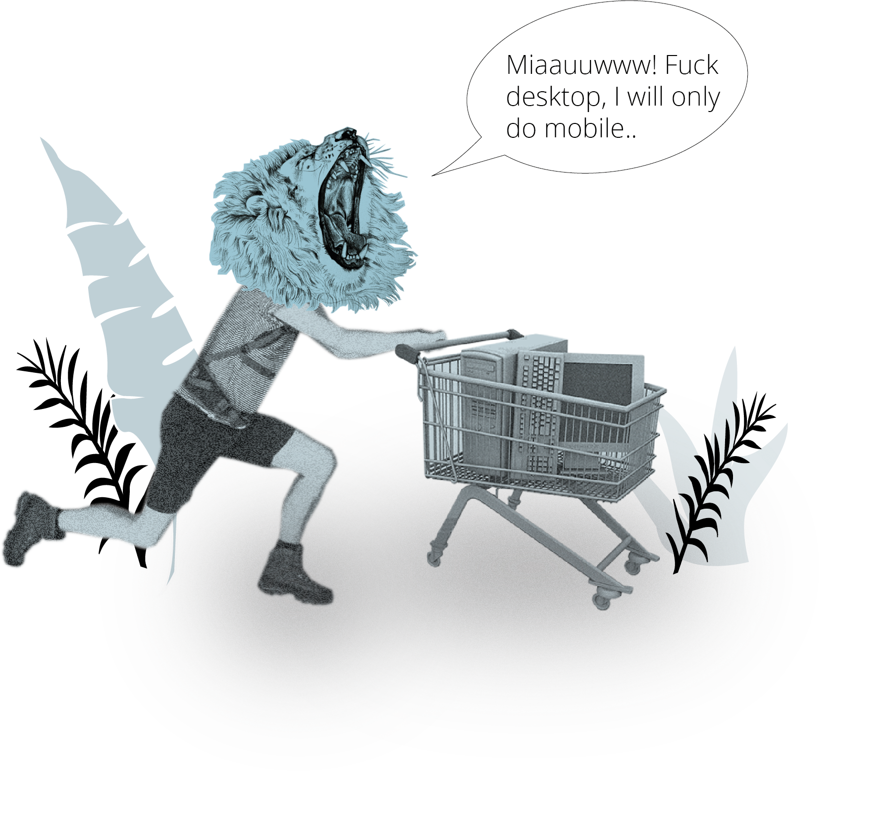
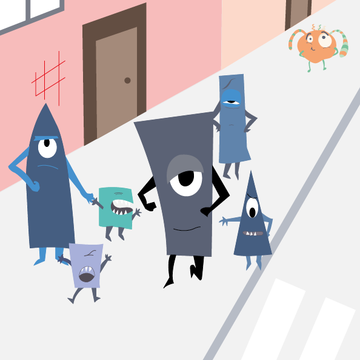
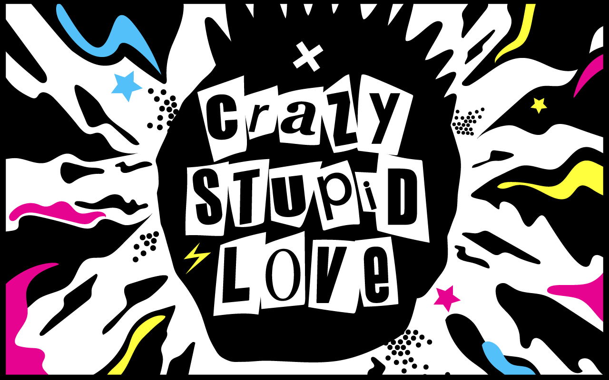

Basic Animation
Individual work and group projects
In this theme we dived into more coding and javascript, as well as character design and storytelling. We had several smaller assignments, followed by a bigger group project durating over two weeks. During this theme I had to move house in CPH twice, so it was a bit hard to keep up with school work. However, I managed to submit all hand-ins (at least into late-submissions), even though I wish I would have had more time to work on them.
Simple Animation
What?
Create a simple animation with an element and 10 buttons to click and do something with that element. I quickly drew a guy called "Ed" and had lots of fun making him jump, dance, rotate and shrink. I love coding!
Here you can find all of our hand-ins:
Skills gained
Javascript
Creating spritesheets
Creating a storyboard with narrative curve
Overcoming my frustration barrier
Character design and storytelling
What?
Create a character, a style sheet, a storyboard and make a little animation. I'm drawing since I've been a little kid, so I really loved to create the character and also the story. I chose to go with a memory of my childhood, because I thought it was easy to convey and I also wanted to create a character for children. I was planning on doing a lot more of "action" for the spritesheet, but the time was too short!
Here you can find all of my hand-ins:
How?
Illustrator
Javascript
Hand Drawing
Skills gained
Tell a story
Code in Javascript
Do everything while moving and living out of a cart box
Project pool
What?
Create as many projects from the project pool as you can manage. As I mentioned earlier, I love coding and I'm excited to become better. I got pretty far in my freecodecamp track, which I already started in November 17'. During this particular week, I started three more projects, but I realised that I have a better learning effect if I go through freecodecamp and other resources at home first, to practice and fully understand the theory. As we went along with other themes, I didn't find enough time to finish my initiated projects.
Here you can find all of my hand-ins:
Skills gained
Javascript
More Javascript
Interactive production
What?
Create an interactive production on a movie scene with a given theme. This was by far the funniest project for me! We worked day and night and I'm proud of our result. Of course due to time restraints, we had to give up on a few more fun ideas or stuff we created.
Here you can find all of our hand-ins:
My role?
User Testing, Illustrations, sound effects, Coding troubleshooting.